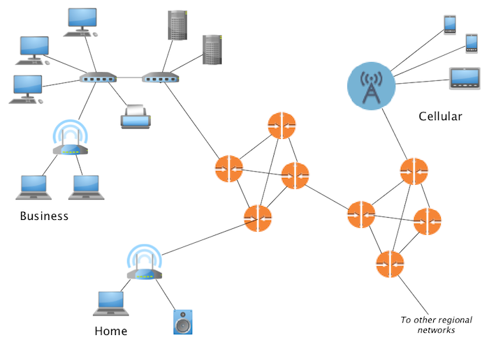
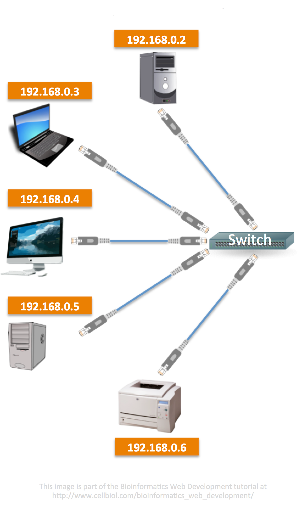
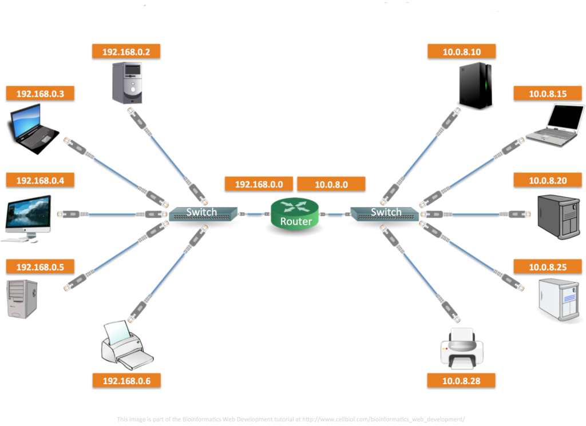
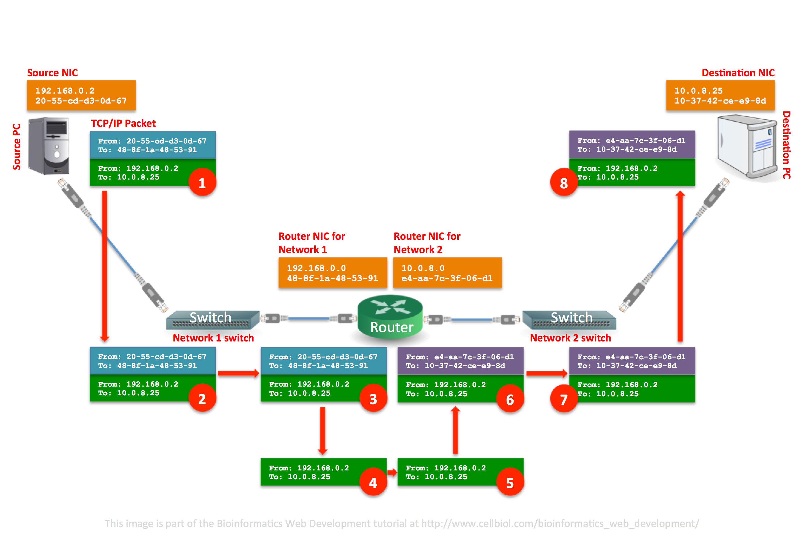
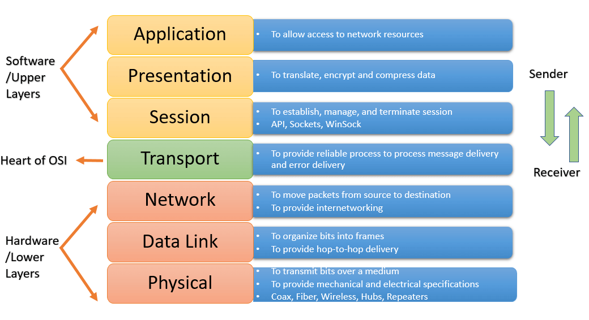
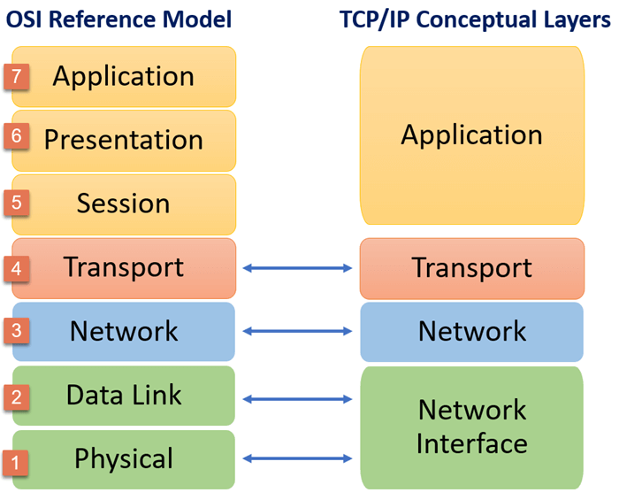

Keyboard shortcuts:
N/СпейсNext Slide
PPrevious Slide
OSlides Overview
ctrl+left clickZoom Element
If you want print version => add '
?print-pdf' at the end of slides URL (remove '#' fragment) and then print.
Like: https://wwwcourses.github.io/...CourseIntro.html?print-pdf
NetworkProgramming-Lecture1
Created for

Въведение
Въведение
Интернет
- Интернет е глобална мрежа от свързани мрежи

{kind=link}
Локална Мрежа
{kind=link}
Свързване на локални мрежи чрез Рутер
{kind=link}
TCP/IP мрежи
Или как "пътува" информацията в Интернет
{kind=link}
Основи на TCP/IP мрежите
Основи на TCP/IP мрежите
- “TCP/IP protocol suite” не е протокол, а наименованието на пакета от протоколи, с които работи световната мрежа Интернет.
- В този пакет се включват протоколите IP, TCP, UDP, ICMP и IGMP.
- Локалните мрежи, работещи с протоколите от пакета TCP/IP се наричат Интранет мрежи.
7-слоен OSI модел на компютърните мрежи
{kind=link}
7-слоен OSI модел на компютърните мрежи
| # | Ниво | Протоколи |
|---|---|---|
| 1 | Physical (физическо ниво) | Осигурява физическото пренасяне на информацията. Може да се реализира от радиовълни, оптични кабели, лазери и др. |
| 2 | Data Link (свързващо ниво) | Осигурява директно пренасяне на информация между две мрежови комуникационни устройства (например две мрежови карти или два модема). Управлява физическото ниво и се грижи за корекция на грешки възникнали в него. Типични протоколи са Ethernet, Token ring, PPP, Frame relay, ISDN и др. |
| 3 | Network (мрежово ниво) | Осигурява пренасяне на единици информация (пакети) между две машини в дадена мрежа, всяка от които има уникален мрежов адрес. Не е задължително двете машини да са пряко свързани една с друга и затова мрежовото ниво осигурява маршрутизиране на пакетите от една машина към друга с цел достигане на крайната цел. Типични протоколи на това ниво са IP, IPv6, IPv4, ICMP, IGMP, X.25, IPX и др. |
| 4 | Transport (транспортно ниво) | Осигурява поддръжката на комуникационни канали за данни между две машини. Позволява пренасяне не само на отделни пакети, но и на по-големи обеми данни. Осигурява прозрачност и надеждност на преноса на данни. Грижи се за започване, поддръжка и прекратяване на комуникацията между машините участнички. Типични протоколи: TCP, UDP,SCTP |
| # | Ниво | Протоколи |
|---|---|---|
| 5 | Session (сесийно ниво) | Организира и синхронизира прозрачната обмяна на информация между два процеса в операционните системи на комуникиращите машини. Типични протоколи от това ниво са: RPC, NetBIOS, CCITT X.225 и др. |
| 6 | Presentation (представително ниво) | Осигурява общ формат, унифицирано канонично представяне на пренасяните данни, което е еднакво за всички платформи и е разбираемо за по-долните слоеве. Типични протоколи или по-точно схеми за унифицирано представяне на данни от това ниво са XDR, ASN.1, SMB, AFP. |
| 7 | Application (приложно ниво) | Осигурява на приложните програмисти интерфейс към мрежовата инфраструктура, осигурена от по-долните слоеве. Протоколите от това ниво задават форматите и правилата за обмяна на данни между комуникиращите приложения. Типични протоколи на това ниво са: HTTP, SMTP, POP3, FTP, SNMP, DNS, NFS и др. |
7-слоен OSI модел на компютърните мрежи
- Всяко от 7-те нива използва за работата си по-долните нива и не се интересува от това как точно те работят, а само от това какво те осигуряват. Това позволява на разработчиците да се абстрахират от ненужните детайли и да се концентрират върху работата само на нивата, които ги засягат.
4-слоен модел на TCP/IP мрежите
- Класическият 7-слоен OSI модел засяга всички страни на организацията на комуникацията между две приложения, но често пъти с цел избягване на излишни детайли при Интернет и Интранет мрежи се използва опростен модел, т. нар. 4- слоен модел на TCP/IP мрежите. При него най-горните 3 слоя от OSI модела са обединени в един, защото реално се отнасят до организацията на комуникацията на ниво приложни програми. Най-долните 2 слоя също са обединени, защото те заедно изпълняват една обща задача – осигуряват пренасянето на информация между две машини, които са директно свързани с някаква комуникационна линия. На практика TCP/IP моделът е опростен частен случай на OSI модела, при който на мрежово и транспортно ниво се използват протоколите от пакета TCP/IP.
4-слоен модел на TCP/IP мрежите
{kind=link}
- Когато пишем Python програми, които комуникират по мрежата, ние програмираме най-горния слой от TCP/IP модела, така нареченият Application слой.
- Преносът на данни, предизвикан от нашите Python програми, се осъществява от транспортния слой посредством протоколите TCP или UDP.
- Транспортният слой използва по- долния мрежов слой за прехвърляне на малки количества информация, наречени IP пакети, от един компютър на друг, а тези пакети се прехвърлят чрез мрежови протоколи и връзки на още по-ниски нива. Като програмисти на Python, не е необходимо да знаем в детайли за всичко това, но все пак трябва да имаме представа поне от TCP и UDP протоколите дотолкова, доколкото е необходимо да преценим кога кой от тях да използваме и от IP протокола дотолкова, доколкото е необходимо да знаем, че всеки компютър в Интернет и Интранет мрежи си има уникален IP адрес, по който можем да се обръщаме към него.
Основни Понятия в TCP/IP мрежите
Основни Понятия в TCP/IP мрежите
IP Address
- Основно понятие в Интернет и всички други TCP/IP мрежи е IP адрес.
- IP адресите представляват уникални 32-битови номера на компютри и се записват като четири 8-битови числа (в десетична бройна система), разделени по между си с точки.
- Всеки компютър, работещ в Интернет или Интранет мрежа, има IP адрес. Пример за IP адрес е записът: 212.39.1.17.
- Машините в TCP/IP базирани мрежи, които имат IP адрес, се наричат хостове (hosts).
- Чрез проста сметка може да се прецени, че адресното пространство на Интернет се състои от около 4 милиарда IP адреса, но това не е съвсем така, защото няколко големи области от това пространство са резервирани за специални цели.
- Разпределението на IP адресното пространство на Интернет се управлява от световната организация IANA.
DNS
- За улеснение на потребителите някои машини в Интернет освен IP адрес могат да имат и имена.
- Съответствията между IP адресите и имената на компютрите (хостовете в Интернет) се поддържат от специални DNS сървъри.
- При заявка DNS сървърите могат да намират IP адрес по име на машина и обратното.
- На едно име на хост в Интернет могат да съответстват няколко IP адреса, а също и на един IP адрес може да съответства повече от едно име.
TCP
- TCP (Transmission Control Protocol) е протокол, който осигурява надежден двупосочен комуникационен канал между две приложения.
- Можем да сравним този канал с канала, по който се осъществява при обикновен телефонен разговор. Например, ако искаме да се обадим на приятел, ние набираме неговия номер и когато той вдигне, се осъществява връзка между нас двамата. Използвайки тази връзка, ние можем да изпращаме и получаваме данни от нашия приятел, до момента, в който един от двамата затвори телефона и прекрати връзката.
- Подобно на телефонните линии, TCP протоколът гарантира, че данните, изпратени от едната страна на линията, ще се получат от другата страна на линията без изменение и то в същия ред, в който са изпратени. Ако това е невъзможно по някаква причина, ще възникне грешка (след определено време, наречено timeout) и ние ще разберем, че има някакъв проблем с комуникационния канал.
- Именно заради тази своя надеждност, TCP е най-често използваният протокол за трансфер на информация по Интернет.
- Примери за приложения, които комуникират по TCP са Web-браузърите, Web-сървърите, FTP клиентите и сървърите, Mail клиентите и сървърите – приложения, за които редът на изпращане и пристигане на данните е много важен.
UDP
- UDP (User Datagram Protocol) е протокол, който позволява изпращане и получаване на малки независими един от друг пакети с данни, наречени дейтаграми, от един компютър на друг.
- За разлика от TCP, UDP не гарантира нито реда на пристигане на изпратените последователно дейтаграми, нито гарантира, че те ще пристигнат въобще.
- Изпращането на дейтаграма е като изпращане на обикновено писмо по пощата: редът на пристигане на писмата не е важен и всяко писмо е независимо от останалите.
- UDP се използва значително по-рядко от TCP заради това, че не осигурява комуникационен канал за данни, а позволява само изпращане на единични независими кратки съобщения (UDP пакети).
Портове – какво представляват и защо за необходими
- Както TCP, така и UDP протоколът позволява едновременно да се осъществяват няколко независими връзки между два компютъра.
- Например можем да зареждаме няколко различни Web-сайта чрез нашия Web-браузър и същевременно да теглим през FTP няколко различни файла от един и същ или няколко различни FTP сървъра. Реално погледнато едно и също приложение (например нашият Web- браузър) отваря едновременно няколко независими комуникационни канала до един или няколко различни сървъра, като по всеки от тях прехвърля някаква информация.
- За да е възможно няколко приложения да комуникират по мрежата едновременно, е необходимо пакетите информация, предназначени за всяко едно от тях да бъдат обработени от съответното приложение, а не от някое друго. Така всяко приложение изпраща и получава своите данни независимо от другите, така сякаш те не съществуват.
- Именно за решаване на този конфликт се използват портовете в протоколите TCP и UDP.
Порт
- Портът е число между 0 и 65536 и задава уникален идентификатор на връзката в рамките на машината.
- Всеки TCP или UDP пакет, освен данните, които пренася, съдържа в себе си още 4 полета, описващи от кого до кого е изпратен пакета: source IP, source port, destination IP и destination port.
- По IP адресите се разпознават компютрите, отговорни за изпращане и получаване на съответните пакети, а по портовете се разпознават съответните приложения, работещи на тези компютри, които изпращат или трябва да получат информацията от тези пакети.
- Всяка TCP връзка в даден момент се определя еднозначно от 4 числа: IP източник, порт източник, IP получател и порт получател.
Сокет (Socket)
- Сокет наричаме двойката (IP адрес; номер на порт).
- Комуникационният канал, който предоставя една TCP връзка наричаме сокет връзка (socket connection). Често пъти сокет връзките се наричат за краткост само сокети.
- Например нека нашият IP адрес е 212.50.1.81 и сме стартирали Google Chrome и Outlook Express. С Google Chrome браузваме някакъв сайт при което той е отворил няколко сокета към IP адрес 212.50.1.1 на порт 80 и тегли през тях някакви Web- страници и картинки. В същото време с Outlook Express си теглим новопристигналата поща и за целта той е отворил сокет към 192.92.129.4 на порт 110. В този момент имаме няколко едновременно отворени TCP сокета (няколко независими една от друга комуникационни линии), чрез които нашият компютър комуникира с други два компютъра. Можем да ги представим схематично по следния начин:
- Google Chrome = 212.50.1.81:1033 « 212.50.1.1:80 = Apache Web Server
- Google Chrome = 212.50.1.81:1037 « 212.50.1.1:80 = Apache Web Server
- Outlook Express = 212.50.1.81:1042 «192.92.129.4:110 = Microsoft Exchange POP3 Server
Live Demo : TCP Dump
# list all interfaces:
tcpdump --list-interfaces
# Capture all packets in any interface:
sudo tcpdump --interface any
Сървъри и клиенти
- Съществуват два вида приложения, които комуникират по TCP протокола – клиентски и сървърни
- Клиентските приложения (наричани още клиенти) се свързват към сървърните като отварят сокет връзка към тях. За целта те предварително знаят техните IP адреси и портове.
- Сървърните приложения (наричани още сървъри) “слушат на определен порт” и чакат клиентско приложение да се свърже към тях. При пристигане на заявка за връзка от някой клиент на порта, на който сървърът слуша, се създава сокет за връзка между клиента на неговия порт източник и сървъра на неговия порт получател.
- Клиентите отварят сокети към сървърите, а сървърите създават сокети само по клиентска заявка, т.е. те не отварят сокети.
- Можем да си представим едно клиент/сървър приложение като магазин с няколко щанда и клиенти, които пазаруват в него.
- Сървърът може да се сравни с магазин, а портът, на който слуша този сървър – с определен щанд вътре в магазина. Когато дойде клиентът, той се допуска, само ако иска да отиде на някой от щандовете, които работят (допуска се връзка само на отворен порт /порт на който слуша някое сървърско приложение/).
- Когато клиентът отиде на съответния щанд, той започва да си говори с продавача (осъществява комуникационна линия и прехвърля данни по нея в двете посоки) на определен език, който и двамата разбират (предварително известен протокол за комуникация).
- Както магазинът, така и щандът могат да обслужват няколко клиента едновременно, без да си пречат един на друг.
- След приключване на комуникацията клиентът си тръгва (и затваря сокета). Междувременно продавачът може да изгони клиента от магазина, ако той се държи невъзпитано или няма пари (сървърът може да затвори сокета по всяко време).
- За повечето операции със сокети имаме аналог с нашия пример с магазина и затова взаимодействието „клиент/сървър” лесно може да се интерпретира като взаимодействие от вида „потребител на услуга/извършител на услуга”.
Протоколи
- Комуникационните канали, наречени сокети, не са достатъчни за осъществяване на комуникация между две приложения.
- Ако се върнем на ситуацията в магазина, клиентът трябва да комуникира с продавачката на известен и за двамата език. По същия начин при клиент/сървър комуникация клиентът и сървърът могат да си общуват само ако знаят един и същ език.
- Формални езици, които се използват за комуникация в компютърни мрежи, се наричат протоколи.
- Протоколите представляват системи от правила, които задават по какъв начин клиентът и сървърът могат да общуват и описват кои са валидните действия, които клиентът и сървърът могат да извършат във всеки един момент от комуникацията.
Услуги в Интернет и стандартни номера на портове
- В Интернет работят много стандартни протоколи за комуникация между приложения, като всеки от тях е свързан с някаква услуга
- Всяка услуга работи с някакъв протокол, предварително известен на клиентските и сървърските приложения. Например услугата достъп за Web-ресурси работи по протокола HTTP, услугата за изпращане на e-mail работи по протокола SMTP, а услугата за достъп до файл от FTP сървър работи по протокола FTP.
- За всяка от тези стандартни Интернет услуги (well-known services) има и асоциирани стандартни номера на портове (well- known ports), на които тези услуги се предлагат.
- Стандартните портове са въведени за да се улесни създаването на клиентски приложения, понеже всяко клиентско приложение трябва да знае не само IP адреса или името на сървъра, на който се предлага услугата, до която то иска достъп, но също и порта, на който тази услуга е достъпна. Някои стандартни портове, протоколи и услуги са дадени в таблицата по- долу:
| Порт | Протокол | Услуга |
|---|---|---|
| 21 | FTP | Услуга за достъп до отдалечени файлове. Използва се от FTP клиенти (например Internet Explorer, GetRight, CuteFTP, wget) |
| 25 | SMTP | Услуга за изпращане на E-mail. Използва се от E-mail клиенти (например Outlook Express, Mozilla Mail, pine) |
| 80/443 | HTTP/HTTPS | Услуга за достъп до Web-ресурси. Използва се от Web- браузъри (например Internet Explorer, Mozilla, lynx) |
| 110 | POP3 | Услуга за извличане на E-mail от пощенска кутия. Използва се от E-mail клиенти (например Outlook Express, Mozilla Mail, pine) |